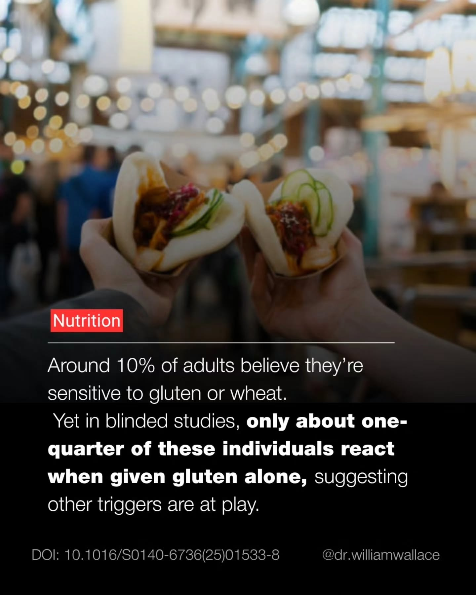
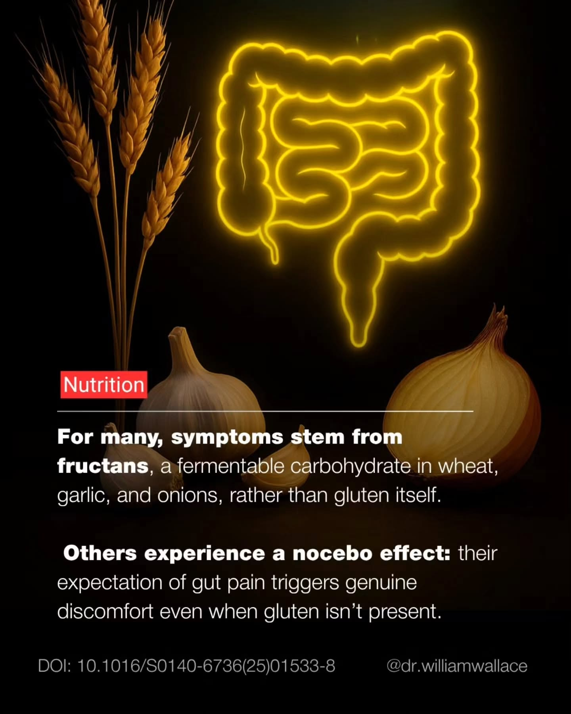
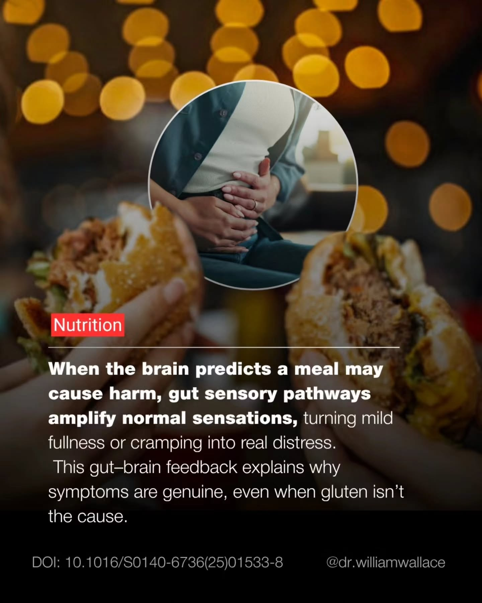
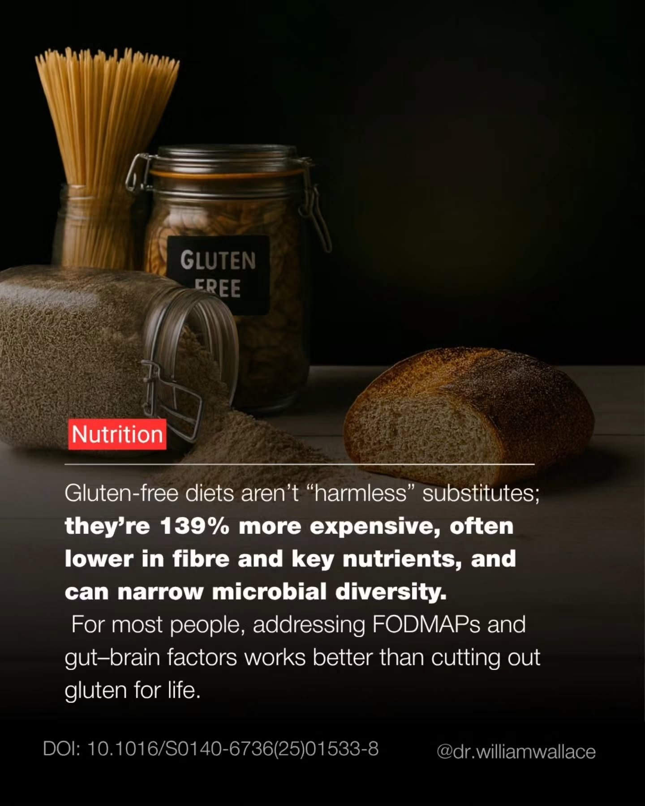

This is eye opening. Understanding root cause is important.
#glutenHD #noceboHD #wholegrainsHD #wheatHD
This new review challenges one of nutrition’s most popular beliefs: that gluten is the primary cause of “gluten sensitivity.”
A 2025 review in The Lancet Gastroenterology & Hepatology looked at more than 50 studies on non-coeliac gluten sensitivity (individuals who report intestinal or extraintestinal symptoms after eating gluten but test negative for coeliac disease and wheat allergy).
Findings:
- Approximately 10% of adults self-report gluten or wheat sensitivity.
- Yet, in blinded challenge studies, only 16–30% of these individuals experience symptoms when given gluten alone.
- For most, symptoms are triggered by fermentable carbohydrates (FODMAPs) such as fructans found in wheat, onions, and garlic; or by nocebo effects, where the expectation of discomfort produces real physiological distress.
Mechanism:
When the brain anticipates that a meal will cause harm, gut sensory pathways amplify normal sensations, making minor distension or gas feel like pain or urgency.
This interaction between the gut and brain [mediated by attention, anxiety, and learned responses] explains why symptoms are genuine, even when gluten is not the trigger.
Clinical relevance:
non-coeliac gluten sensitivity remains a diagnosis of exclusion. True gluten sensitivity appears uncommon, and in many patients, symptoms align with gut–brain interaction disorders such as irritable bowel syndrome.
Effective management often combines low-FODMAP dietary strategies with psychological support to reduce hypervigilance and food-related anxiety.
Unnecessary gluten avoidance can carry costs.
Gluten-free products are 139% more expensive on average, often lower in fibre, iron, and B vitamins, and can reduce microbial diversity.
For most who feel unwell after bread or pasta, gluten isn’t the culprit; gut–brain sensitivity and, to a possibly lesser but still notable extent, short-chain fermentable carbohydrates are.




